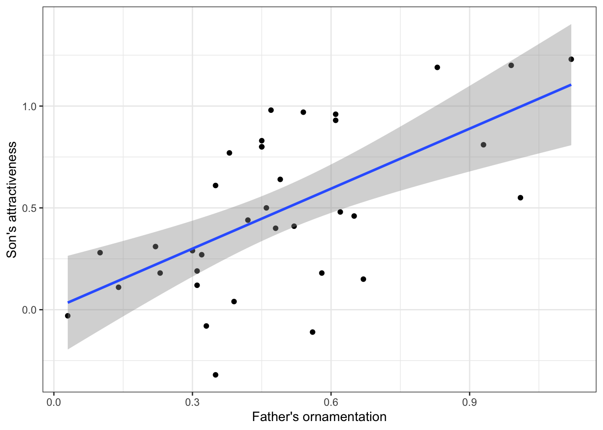
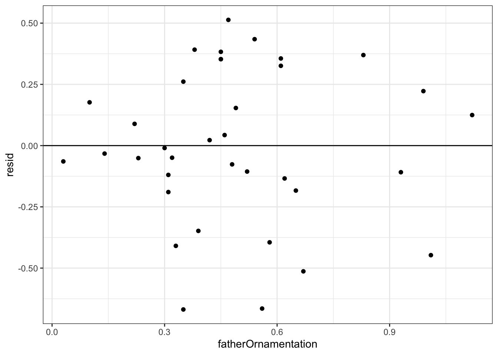
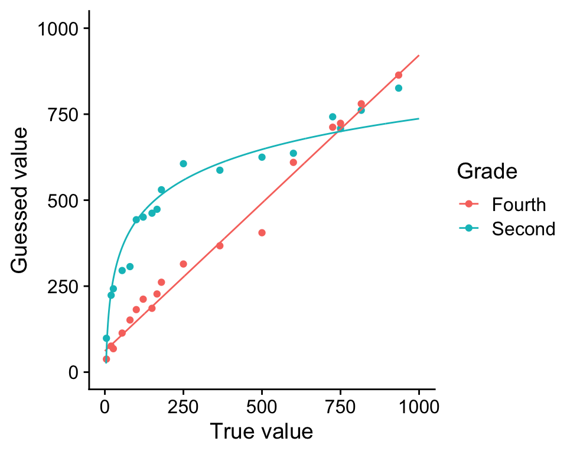

guppy_data <- read.csv("biol220_class/students/username/data/chap02e3bGuppyFatherSonAttractiveness.csv")10 Regerssion
10.1 Goals
- Estimate slopes of regressions
- Test regression models
- Plot regression lines
- Examine residual plots for deviations from the assumptions of linear regression
10.2 Learning the Tools
We will revisit the data set from Example 2.3B in Whitlock and Schluter that we used last week to introduce correlation. These data investigate the relationship between how ornamented a father guppy is (fatherOrnamentation) and how attractive to females are his sons (sonAttractiveness). Load the data from the .csv file:
Let’s plot the data again before we start.
ggplot(guppy_data, aes(x = fatherOrnamentation, y = sonAttractiveness)) +
geom_point() +
xlab("Father's ornamentation") +
ylab("Son's attractiveness") +
theme_bw()
Note that these data seem to have a moderately strong, positive relationship.
10.2.1 Linear regression
Regression in R is a two-step process similar to the steps used in ANOVA last week. In fact, we again start by using lm() to fit a linear model to the data. (Both ANOVA and regression are special cases of linear models, which also can be used to generate much more complicated analyses than these.) We then give the output of lm() to the function summary() to see many useful results of the analysis.
Using the lm() function to calculate regression is similar to the steps used for ANOVA. The first argument is a formula, in the form response_variable ~ explanatory_variable. In this case we want to predict son’s attractiveness from father’s ornamentation, so our formula will be sonAttractiveness ~ fatherOrnamentation. The second input argument is the name of the data frame with the data. We will want to assign the results to a new object with a name (we chose “guppy_regression”), so that we can use the results in later calculations with summary().
guppy_regression <- lm(sonAttractiveness ~ fatherOrnamentation, data = guppy_data)
# Let’s look at the output of lm() in this case.
guppy_regression
Call:
lm(formula = sonAttractiveness ~ fatherOrnamentation, data = guppy_data)
Coefficients:
(Intercept) fatherOrnamentation
0.005084 0.982285 This tells us that the estimate of the slope of the regression line is 0.982285, and the y-intercept is estimated to be 0.005084. Therefore the line that is estimated to be the best fit to these data is
\[\text{sonAttractiveness} = (0.982285 \times \text{fatherOrnamentation} + 0.005084.\] We can find other useful information by looking at the summary() of the lm() result:
summary(guppy_regression)
Call:
lm(formula = sonAttractiveness ~ fatherOrnamentation, data = guppy_data)
Residuals:
Min 1Q Median 3Q Max
-0.66888 -0.14647 -0.02119 0.27727 0.51324
Coefficients:
Estimate Std. Error t value Pr(>|t|)
(Intercept) 0.005084 0.118988 0.043 0.966
fatherOrnamentation 0.982285 0.216499 4.537 6.78e-05 ***
---
Signif. codes: 0 '***' 0.001 '**' 0.01 '*' 0.05 '.' 0.1 ' ' 1
Residual standard error: 0.3212 on 34 degrees of freedom
Multiple R-squared: 0.3771, Adjusted R-squared: 0.3588
F-statistic: 20.59 on 1 and 34 DF, p-value: 6.784e-05We see the estimates of the slope and intercept repeated here, in the Coefficients table under Estimate. Now, we also are given the standard error and P-value for each of these numbers in that same table. For these data, the P-value for the null hypothesis that the true slope is zero is \(6.78 \times 10 ^ {–5}\).
Plotting this line on the scatterplot is fairly straightforward in ggplot(). We can use the same plot function as above, with a new layer added with “+ geom_smooth(method = lm)”:
ggplot(guppy_data, aes(x = fatherOrnamentation, y = sonAttractiveness)) +
geom_point() +
xlab("Father's ornamentation") +
ylab("Son's attractiveness") +
geom_smooth(method = lm) +
theme_bw()
This layer adds both the best-fitting regression line and also the 95% confidence interval for the line shown in gray shading. The outer edges of the shaded area represent the confidence bands, indicating the 95% confidence intervals for the mean of the Y-variable (son’s attractiveness) at each value of the X-variable (father’s ornamentation). If you want a plot without this confidence interval, add the argument se = FALSE to the geom_smooth() function, as in geom_smooth(method = lm, se = FALSE).
10.2.2 Residual plots
To check that the assumptions of regression apply for your data set, it is can be really helpful to look at a residual plot. A residual is the difference between the actual value of the y variable and the predicted value based on the regression line.
R can calculate the residuals from a model with the residuals() function. Simply give this function the results from the lm() function, such as the guppy_regression that we calculated above. A vector of all the residuals for this regression line would be calculated by
residuals(guppy_regression)To make a residual plot, we’ll make a new column called guppy_data$resid. As you long as you’re careful, the order of points in residuals(guppy_regression) matches the order of the original data, but it’s to mess this up if you don’t know what you’re doing. With a residual plot, we plot the residuals of each data point as a function of the explanatory variable.
guppy_data$resid <- residuals(guppy_regression)
ggplot(guppy_data, aes(x = fatherOrnamentation, y = resid)) +
geom_point() +
geom_hline(yintercept = 0) +
theme_bw()
The command + geom_hline(yintercept = 0) adds the horizontal line at 0 to the plot so that it is easier to see the baseline.
This residual plot shows no major deviation from the assumptions of linear regression. There is no strong tendency for the variance of the residuals (indicated by the amount of scatter in the vertical dimension) to increase or decrease with increasing \(x\). The residuals show no outliers or other evidence of not being normally distributed for each value of \(x\).
10.3 Questions
10.3.1 1. Numerical estimation in grade schoolers
Opfer and Siegler (2007) asked second- and fourth-grade school children to mark on a number line where a given number would fall. Each child was given a drawing of a number line with two ends marked at 0 and 1000, and was then asked to make an X on that line where a number, for example 150, should be placed. They asked each child to place several different numbers on the number lines, each on a fresh new piece of paper.
The researchers then measured the placement of each mark on a linear scale. The results, averaged over all 93 kids for each group, are given in the file “numberline.csv”.
Plot the fourth graders’ guesses against the true value. Is this relationship linear? If not, find a transformation of \(X\) or \(Y\) that converts the relationship into an approximately linear one.
Plot the second-graders’ guesses against the true value. Is this relationship linear? If not, find a transformation of \(X\) or \(Y\) that converts the relationship into an approximately linear one. Fit a linear regression to both the transformed and untransformed data. Examine the residual plots for both the transformed and untransformed data.
Hint: if you get stuck on which transformation to use, unhide the plot below to reveal curves fit to both relationships without any transformation.
Show figure

- Assume that the difference between the shapes of these curves is real. What would you conclude about the difference in the way 2nd graders and 4th graders perceive numbers?
10.3.2 2. Brain-body mass allometry in mammals
Larger animals tend to have larger brains. But is the increase in brain size proportional to the increase in body size? A set of data on body and brain size of 62 mammal species was collated by Allison and Cicchetti (1976), and these data are in the data set “mammals.csv”. The file contains columns giving the species name, the average body mass (in kg) and average brain size (in g) for each species. These are the same data used in the second half of the app about residuals that you used in the activities earlier in this lab.
Plot transformed brain size against body size using code from last week
What line best predicts (transformed) brain size from (transformed) body size?
Make a residual plot using the regression fitted to the transformed variables. Do the data look like they match the assumptions of linear regression?